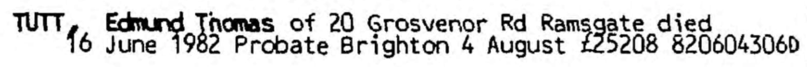
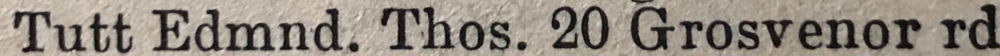
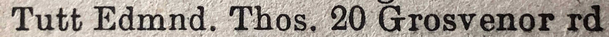
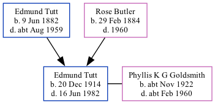

Edmund Thomas Tutt 1914 - 1982
[ Home ] | [ Calendar ] | [ Surnames Index ] | [ Family History ]An agricultural laborer and the 3rd of 7 children of Edmund Tutt (a bricklayer's laborer) and Rose Butler (a laundress), Edmund Tutt, the second cousin once-removed on the father's side of <a href="I1.html">Nigel Horne</a>, was born in St Lawrence, Thanet, Kent, England on Dec 20, 1914<span class="citation">1,2,3,4</span>. He married Phyllis K G Goldsmith in Thanet, Kent, England around Aug 1955<span class="citation">6</span>.</p><p>Edmund spent all of his life in Kent, England. Throughout his life, he lived on 20 Grosvenor Road, St Lawrence in Thanet on Jun 19, 1921<span class="citation">1</span>, on Sep 29, 1939<span class="citation">2</span>, in 1963<span class="citation">7</span> (the same place as his parents had been living on Jun 19, 1921), in 1974<span class="citation">8</span> and in 1982. <p>He died on Jun 16, 1982 in Thanet<span class="citation">4,5</span>.
Parents
- Edmund Thomas was born on Jun 9, 1882
- Rose was born on Feb 29, 1884
Citations
- 1921 Census Of England & Wales - Findmypast (was age 6 and the son of the head of the household)
- 1939 Register - Findmypast (was the son of the head of the household)
- England & Wales births 1837-2006 - Findmypast
- England & Wales deaths 1837-2007 - Findmypast
- England & Wales Government Probate Death Index 1858-2019 - Findmypast
- England & Wales Marriages 1837-2005 - Findmypast
- 1963 Kelly's Thanet Directory
- 1974 Kelly's Thanet Directory
Media
Edmund Thomas Tutt - probate

1963 Kelly's Thanet Directory

1974 Kelly's Thanet Directory

England & Wales deaths 1837-2007 - BMD/D/1982/2/AZ/000921/012
England & Wales births 1837-2006 - BMD/B/1915/1/AZ/001570/049
England & Wales marriages 1837-2005 - BMD/M/1955/3/AZ/001626/073
England & Wales Government Probate Death Index 1858-2019 - GBOR/GOVPROBATE/C/1982-1982/00242531
1921 Census of England & Wales - GBC/1921/RG15/04480/0163/05
Family Tree
Generated by Ged2Site. Last updated on Jul 20, 2025